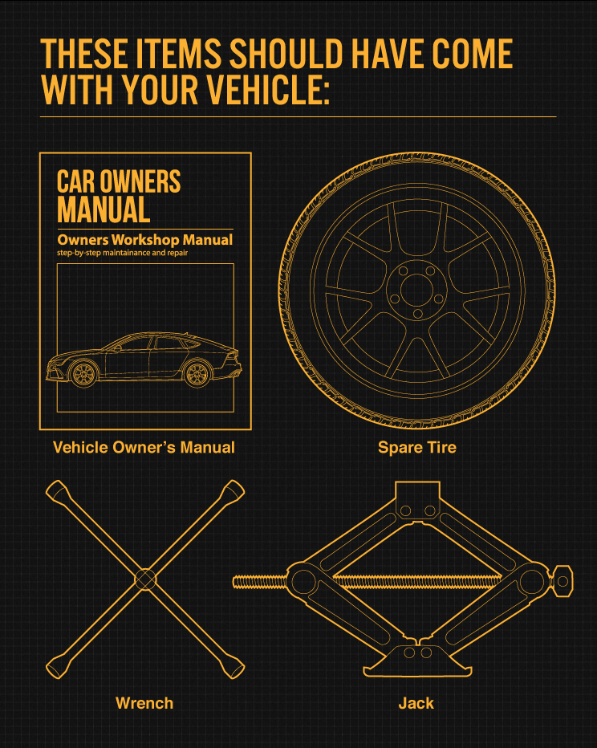

Changing a Flat Tire
At some point in our lives, we will have to deal with a flat tire. Tire-related issues cause about one-third of roadside emergencies, which happens to be a lot. The best thing that you can do is be prepared for a flat tire before it catches you off guard.
What if I get a flat while driving? You will be able to notice if you have a flat tire as you will feel a bumpiness in your ride and then a change in your ability to steer your car. Make sure you don’t drive on a flat tire for too long as it may cause damage to your rim.
If you happen to get a flat, don't panic, everything will be okay. What you will need to do is:
- turn on your hazard lights,
- slow down,
- and find a safe place to pull over on the road (either in a turn out or a parking lot).
Photo by David Edelstein on Unsplash.
We are all capable of changing a flat tire ourselves! If you know how to do it and are physically able to change the tire, here are the steps in changing the tire if you have a spare:
- You will first need to have a jack, lug wrench, a spare tire, and an owner’s manual for your car.
- Find level ground to change your tire at. This will make things a lot easier if the ground is flat.
- Turn on your hazards (this will help other cars see you if you’re on the side of the road)
- Put on your parking brake
- Put wheel wedges around your tires to help keep it from moving (you can use large rocks if you don’t have actual wedges)
- If you have a hubcap/wheel cover, use the flat end of the lug wrench to remove the cover
- Use your lug wrench again to turn the lug nuts counterclockwise by turning to the left (lefty-loosey). Only loosen these either ¼ to ½ of a turn and don’t remove them yet
- Put your jack under your car! This should go along the frame by the tire that’s flat
- Start raising the vehicle with the jack (you can put a piece of wood under it to keep it balanced)
- Loosen the lug nuts all the way and remove them
- Take off the flat tire
- Take the spare and line them up with the lug bolts until the bolts show through the rim
- Put the lug nuts back on and tighten them with your hand (righty-tighty) until you can’t twist them anymore
- Lower your vehicle with the jack until the spare is resting on the ground but doesn’t have the full weight of the car on the ground
- Tighten the lug nuts all the way with the wrench you used before by using your body weight
- Bring your vehicle all the way on the ground with the jack and then tighten the lug nuts again with the wrench to make sure nothing will unscrew
- Put your hubcap/wheel cover back on
- Put away all the tools that you used
- Get to a tire technician as soon as possible since spare tires aren’t meant to last long, just long enough to get a new tire

What to have in your car to change your tire
Don’t want to change your own tire? Don’t worry, there are people who can help you. If you have AAA, this is what they are here for. Get your AAA card out and call the number on the card and they will send someone out to fix your tire. If you don’t have AAA, you can call 911 if you are stranded on the highway/freeway. There are also some insurance companies that have roadside assistance. Or, you can call a local towing company to have them come to you and tow your car or they will provide a tire-change service.
If someone approaches you in an unmarked car, they might be a friendly stranger that is willing to help, but to always be careful. Don’t be afraid to just stay in your vehicle with locked doors and wait for a marked car to come and help.